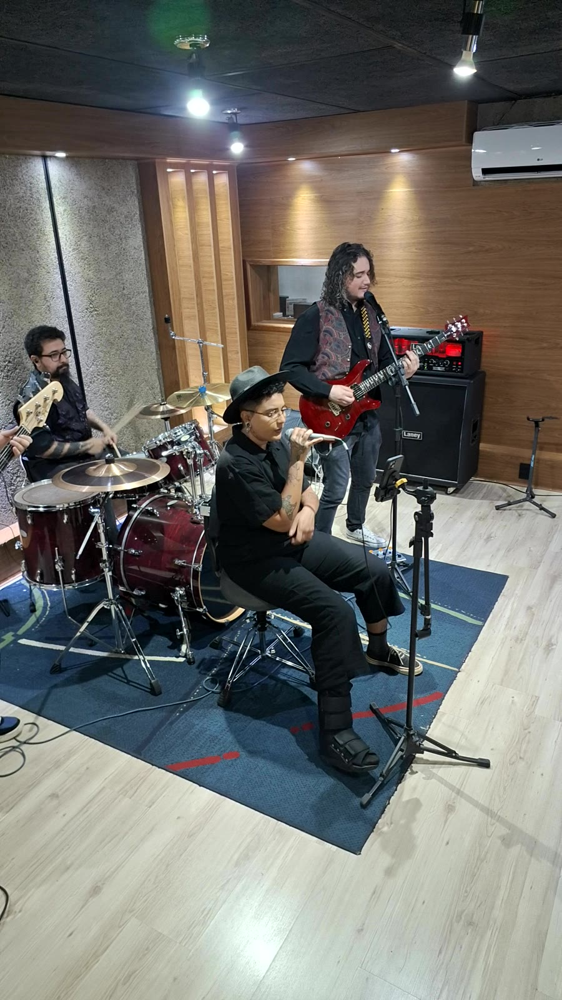
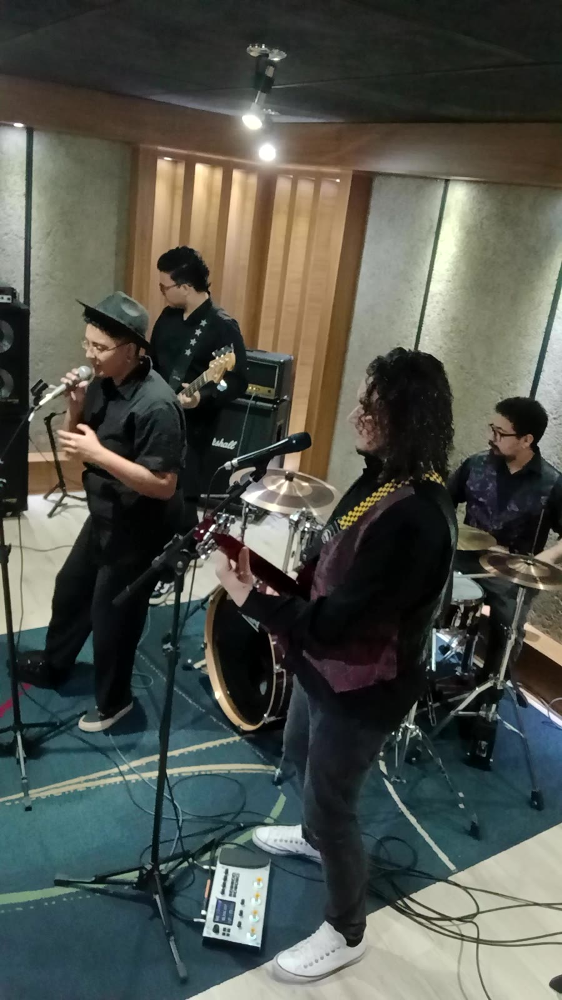
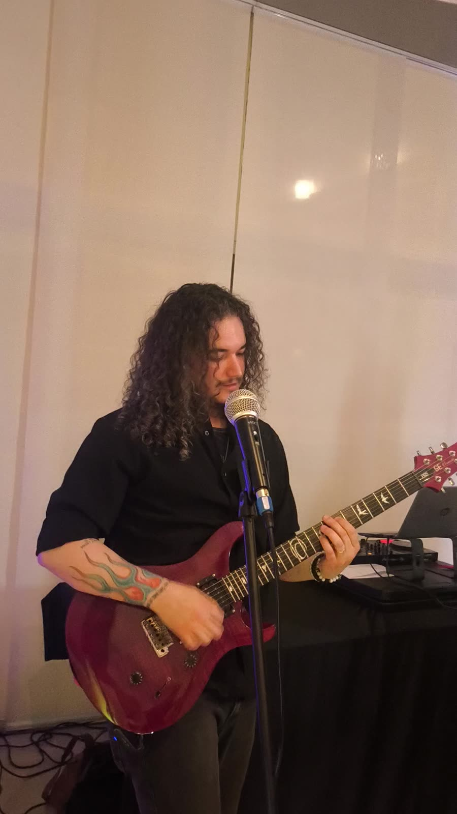
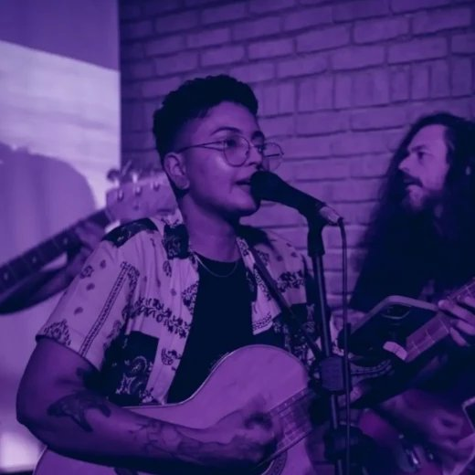
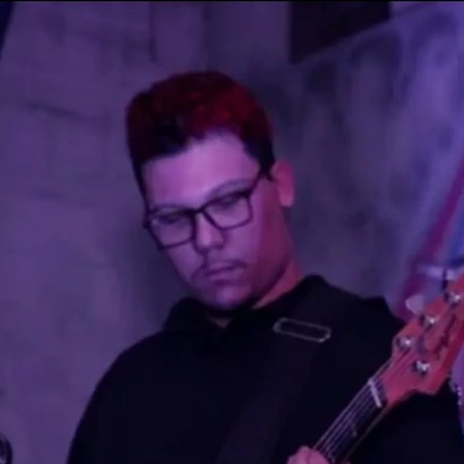
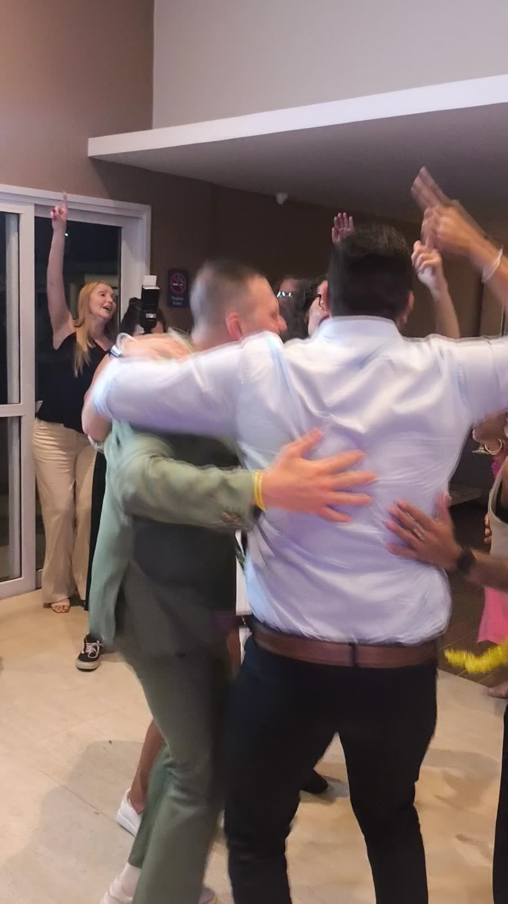
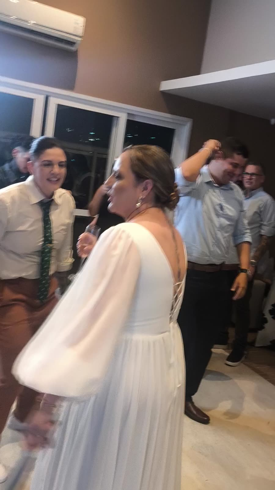
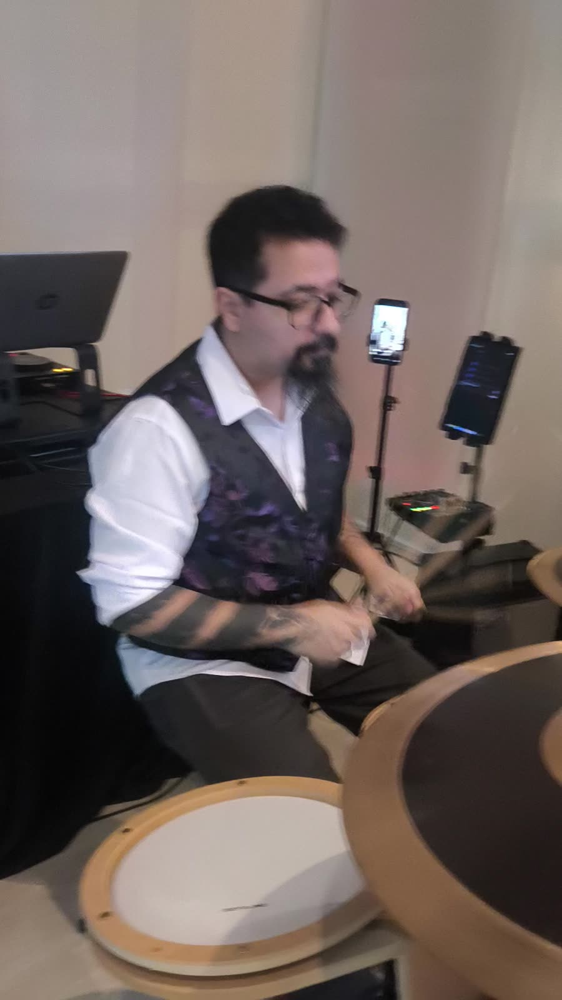
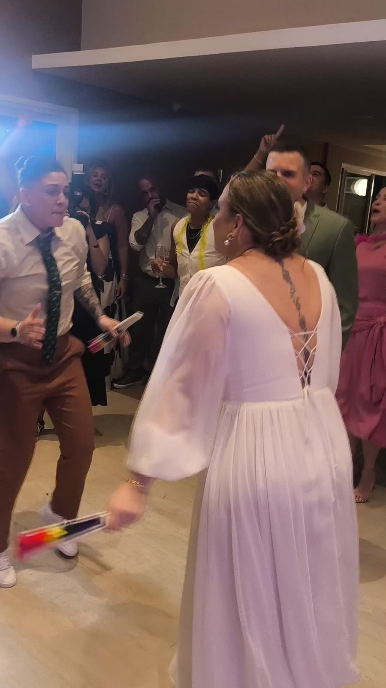
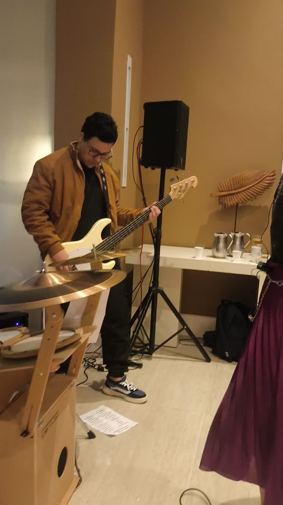

0 min
Ninguém volta para a mesa.
Sabe aquele momento em que a banda para e a pista esvazia? Na sua festa ele não existe. No intervalo, um de nós assume as pick-ups e a dança continua.
Banda ao vivo + DJ · Casamentos e eventos · Rio de Janeiro


A Violet Night
A Violet Night é uma banda focada na experiência completa da sua festa. A gente passeia por todos os estilos para a pista ficar cheia do começo ao fim. Daqui a dez anos, ninguém vai lembrar do cardápio. Vão lembrar da pista lotada, dos amigos abraçados gritando o refrão e de vocês dois dançando no meio de todo mundo. É essa noite que a gente veio fazer.
O diferencial
0 min
Sabe aquele momento em que a banda para e a pista esvazia? Na sua festa ele não existe. No intervalo, um de nós assume as pick-ups e a dança continua.
+1.000
A do primeiro encontro, a da viagem, a que vocês cantam alto no carro. Ela vai tocar ao vivo, no dia mais importante da vida de vocês. São mais de 1.000 músicas para escolher, e se a de vocês não estiver lá, a gente inclui.
10+ anos
Professores de música, formação na Escola Villa-Lobos e mais de 10 anos de palco cuidando de cada detalhe, enquanto vocês aproveitam cada minuto.

Setlist
Violet Night
Repertório
Do rock nacional ao pagode, do pop internacional ao sertanejo, mais o funk e o set do DJ para fechar a noite.
A banda
A Violet Night é um sonho antigo de cada um de nós: viver de música participando dos momentos mais marcantes da vida das pessoas. Cada um veio de um canto diferente (MPB, nu metal, rock, pick-ups) e, juntos, a gente toca o que a sua festa pedir.

Voz e violão
Filha de seresteiro, formada em canto popular pela Escola Villa-Lobos. Está nos palcos desde 2013.
Guitarra
Professor de música, veio das bandas de nu metal. O lema dele é "alegria compartilhada é alegria redobrada".
Bateria
Professor e espinha dorsal da banda, com estrada nos palcos do Sudeste. Pequeno na estatura, gigante no groove.

Baixo e DJ
Decidiu aos 6 anos que seria um guitar hero. Já passou por bateria, guitarra e baixo, e agora comanda a pista de dois jeitos.
Vamos conversar sobre o dia mais importante da sua vida em uma reunião, sem pressa.
As músicas que não podem faltar, as proibidas e a de vocês dois.
Feito para o seu evento, com tudo combinado antes.
A gente chega, monta e toca. Vocês só se preocupam em dançar.

Amigos abraçados, braço pra cima e ninguém sentado.

O momento que a gente veio fazer acontecer.

Ao vivo, perto dos convidados, no ritmo da noite.
Espaço reservado para o depoimento das noivas. Entra aqui assim que chegar o print, com a autorização delas.
Ver mais no InstagramSim. Fazemos arranjo personalizado, inclusive da música do casal.
De 2 a 3 horas de banda ao vivo, com DJ nos intervalos para a pista não parar.
Podemos levar. Se o local ou a assessoria já tiver estrutura, usamos a de lá. O orçamento muda conforme o caso.
Sim. Combinamos a logística no orçamento.
Não. Também tocamos em aniversários, 15 anos, bodas e eventos de empresa.
Depende da data, do local, da duração e da estrutura. Chamem no WhatsApp que a gente monta um orçamento sob medida.

